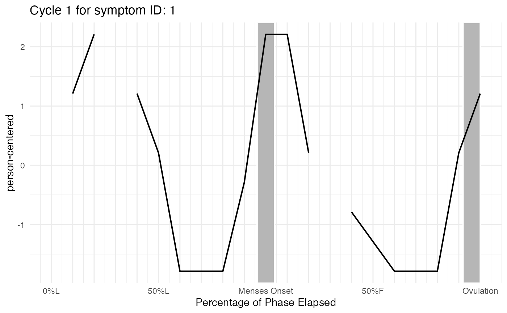

Generate Cycle-Specific Plots and Summary Data for a Given ID
Source:R/cycle_plot_individual.R
cycle_plot_individual.RdThis function creates cycle-specific plots and summary statistics for a specified individual (id),
storing both in a named list for easy access.
Usage
cycle_plot_individual(
data,
id,
symptoms,
centering = "menses",
y_scale = "person-centered",
include_impute = TRUE,
rollingavg = 5
)Arguments
- data
A dataframe containing menstrual cycle data, including
idandcyclenumcolumns.- id
Numeric id number for the specific individual for whom cycle plots should be generated.
- symptoms
A vector of strings specifying the symptom variable to analyze that exist in
data.- centering
A string indicating the centering phase of the cycle ("menses" or "ovulation").
- y_scale
A string specifying the y-axis scale ("person-centered", "person-centered_roll", "raw", or "roll").
- include_impute
A boolean indicating whether to use imputed cycle time values.
- rollingavg
A numeric indicating how many days of a rolling average to use, the default is 5
Value
A named list, one element per entry in symptoms. Each of those is itself a named
list, one element per cycle (named "Cycle_1", "Cycle_2", ...), each containing:
$plot: The cycle-specific ggplot object with the ID displayed$summary: The corresponding summary data
So for a single symptom "symptom" and its first cycle, access the plot as
result[["symptom"]][["Cycle_1"]]$plot.
Examples
cycle_df = cycledata
data_with_scaling <- pacts_scaling(
cycle_df,
id = id,
date = daterated,
menses = menses,
ovtoday = ovtoday,
lower_cyclength_bound = 21,
upper_cyclength_bound = 35
)
result <- cycle_plot_individual(
data_with_scaling,
id = unique(data_with_scaling$id)[1],
symptoms = "symptom"
)
# the first cycle's plot and summary for "symptom":
result[["symptom"]][["Cycle_1"]]$plot
#> Warning: Removed 1 row containing missing values or values outside the scale range
#> (`geom_line()`).

result[["symptom"]][["Cycle_1"]]$summary
#> # A tibble: 20 × 7
#> cycleday_5perc mean_dev mean_dev_roll raw_sx sx_roll cycleday mcyclength
#> <dbl> <dbl> <dbl> <dbl> <dbl> <dbl> <dbl>
#> 1 0 NaN 0.877 NaN 3.67 11 24
#> 2 0.05 1.21 1.63 4 4.42 12.5 24
#> 3 0.1 2.21 1.88 5 4.67 14 24
#> 4 0.15 NaN 1.46 NaN 4.25 15 24
#> 5 0.2 1.21 1.04 4 3.83 16.5 24
#> 6 0.25 0.211 0.211 3 3 18 24
#> 7 0.3 -1.79 -1.04 1 1.75 19.5 24
#> 8 0.35 -1.79 -1.54 1 1.25 21 24
#> 9 0.4 -1.79 -1.19 1 1.6 22 24
#> 10 0.45 -0.289 -0.914 2.5 1.88 23.5 24
#> 11 0.5 2.21 1.54 5 4.33 1 24
#> 12 0.55 2.21 1.54 5 4.33 2 24
#> 13 0.6 0.211 0.961 3 3.75 3 24
#> 14 0.65 NaN -0.0395 NaN 2.75 4 24
#> 15 0.7 -0.789 -1.04 2 1.75 5 24
#> 16 0.8 -1.79 -1.54 1 1.25 6 24
#> 17 0.85 -1.79 -1.19 1 1.6 7 24
#> 18 0.9 -1.79 -0.789 1 2 8 24
#> 19 0.95 0.211 -0.539 3 2.25 9 24
#> 20 1 1.21 -0.123 4 2.67 10 24